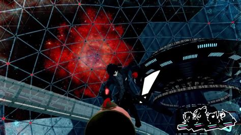

Persona 5 Royal
A Persona 5 egyik legvonzóbb, ugyanakkor legelriasztóbb tulajdonsága, hogy milyen kirobbanóan energikus prezentációja van. Mivel egy JRPG-től nem éppen szokatlan módon mangás külsőt öltött magára, a közönség egy része automatikusan nem foglalkozik vele, különösen a világnak ezen a táján. Pedig érdemes rá felhívni a figyelmet, hogy a Persona 5 nem úgy néz ki, mint például egy tipikus anime. A karakterdizájn az Atlus hagyományaihoz hűen felnőttesebb (nem használják például a tipikusan bazi nagy szemeket), bár ez nem azt jelenti, hogy ne vették volna szándékosan vagány és csábos megjelenésűre a szereplőket. Viszont a lázadozós történethez ez hibátlanul passzol, a Metaverse-ben felöltött fantasztikus ruhaköltemények különösen jól kifejezik hőseink vágyait és fantáziáját. Szerencsére a játék számos 2D-s képet használ, mert ezek némelyike letaglózóan stílusos lett, az all-out attack ábrái például mind jól mutatnak asztali háttérképként.

A játékra úgy általában jellemző, hogy a benne bejárható területeket rendkívül erős stílusérzékkel és kreativitással tárja elénk. Az első palota témája például a bujaság, ennek megfelelően fülledten vöröses színeket használnak benne. A második dungeon pedig a túlzásba vitt fényűzésről szól, ezért olyan igénytelen töménységgel csillog az aranytól, hogy egy kifinomultabb esztétikai ízléssel rendelkező ember kidobja tőle a taccsot. Ehhez érdemes hozzátenni, hogy a főellenségek árnyai és végső formái is szélsőségen gusztustalanul néznek ki, de ebben az esetben nagyon jól áll nekik a sarkítás, hisz többek között a hét főbenjáró bűnt is ők képviselik. A kedvencem a pénzéhes főellenség, akinek végső formájában úgy néz ki, mint egy légy, és még arra is odafigyeltek az animátorok, hogy az ízeltlábúhoz hasonlóan mozgassa a karjait (volt is már rémálmom tőle). Ami a tokiói valóságot illeti, néhányan belekötöttek abba, hogy az utcán bóklászó embereket felületesen megrajzolt és random spawnoló NPC-k képviselik, akiken simán keresztül lehet gyalogolni, tehát inkább hatnak díszletnek, mint hús-vér testeknek . Szerintem azonban ez az ábrázolás kiválóan passzol a történethez, melyben pont az arctalan tömeg és az egyén közötti konfliktus kapja az egyik legnagyobb szerepet. Az Atlus direkt rájátszik erre az összemosódásra, néha vannak olyan jelenetek, amikor az egyik utcaképen emberek megjegyzéseit olvasgathatjuk, de azt sosem látjuk, hogy ki a beszélő. Ami azért fontos, mert a Persona 5 történetében gyakorlatilag saját, bár meglehetősen szeszélyes személyiséggel rendelkező szereplőnek számít a közvélemény.